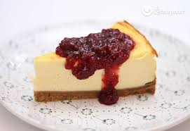

Ingredientes:
- 200 g de galletas trituradas
- 100 g de mantequilla derretida
- 400 g de queso crema
- 200 ml de crema para batir
- 150 g de azúcar
- 2 huevos
- 1 cucharada de esencia de vainilla
- Mermelada de frutos rojos para decorar
Preparación:
- Mezcla las galletas trituradas con la mantequilla derretida y presiona en el fondo de un molde.
- En un bol, bate el queso crema con la crema para batir, el azúcar, los huevos y la vainilla.
- Vierte la mezcla sobre la base de galleta y hornea a 180°C por 40 minutos.
- Deja enfriar y refrigera por al menos 4 horas.
- Decora con mermelada de frutos rojos y disfruta tu cheesecake. 🍰